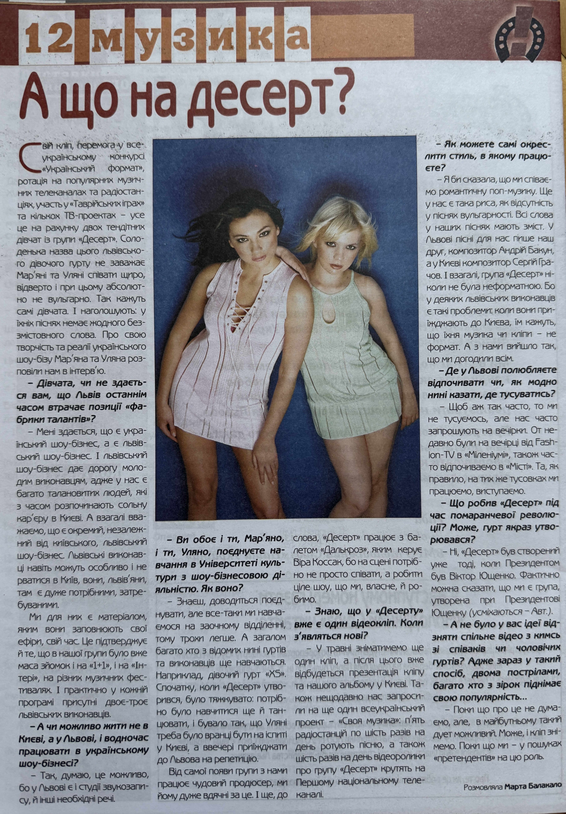

Molodizhnyi Soiuz Dessert Interview (2006)

Basic Information
| Original Title | А що на десерт? |
| Material Type | Periodical Interview |
| Featured Artist | Uliana Latyk |
| Group | Dessert (Десерт) |
| Other Group Member | Mariana Krylyk |
| Publication | Molodizhnyi Soiuz (Молодіжний Союз) |
| Issuing Organization | ЛОО ВМГО «Молодіжний Союз Наша Україна» |
| Section | Music (Музика) |
| Publication Date | 20 March 2006 |
| Issue | No. 3 |
| Page | 12 |
| Language | Ukrainian |
Description
This interview, published in issue No. 3 of Molodizhnyi Soiuz (Молодіжний Союз) on 20 March 2006, documents an active period in the career of the Lviv-based group Dessert (Десерт). The publication notes the group’s victory in the nationwide “Ukrainian Format” (“Український формат”) competition, rotation on music television channels and radio stations, participation in Tavriyski Ihry (Таврійські ігри), television projects, and the release of its first music video.
In the interview, Uliana Latyk and Mariana Krylyk discuss combining their studies at the University of Culture with professional music activities, the development of the Lviv music industry, and the possibility of building a nationwide music career while remaining based in Lviv. The interview records that during the early period of Dessert, Uliana sometimes had to attend an examination in Kyiv in the morning and return to Lviv for a rehearsal the same evening.
The publication also documents the group’s professional stage development. Dessert worked with the Dalcroze (Далькроз) ballet led by Vira Kossak, while songs for the group were written in Lviv by composer Andrii Bakun and in Kyiv by composer Serhii Hrachov. At the time of publication, Dessert already had one music video and planned to film another in May 2006, followed by a presentation of the video and the group’s album in Kyiv.
The interview further records Dessert’s participation in the nationwide “Svoia Muzyka” (“Своя музика”) project, through which the group received intensive radio rotation and television exposure on the First National Television Channel. The publication provides an important contemporary record of Dessert’s growing national media presence and of Uliana Latyk’s professional activity during this period.
Archive Information
| Archive Category | Press Publication |
| Original Name | Uliana Latyk |
| Current Stage Name | Ana Danch |
| Group | Dessert |
| Archive Reference | Molodizhnyi Soiuz Interview (2006) |
| Country | Ukraine |
Credits
| Author / Interviewer | Marta Balakalo |
| Publication | Molodizhnyi Soiuz (Молодіжний Союз) |
Source Information
| Publication | Molodizhnyi Soiuz (Молодіжний Союз) |
| Issuing Organization | ЛОО ВМГО «Молодіжний Союз Наша Україна» |
| Date | 20 March 2006 |
| Issue | No. 3 |
| Section | Music (Музика) |
| Page | 12 |
Archive Materials
Front page of issue No. 3 of Molodizhnyi Soiuz, dated 20 March 2006.

Page 12 containing the interview “А що на десерт?” with Uliana Latyk and Mariana Krylyk of the group Dessert.
Notes
The interview was published in issue No. 3 of Molodizhnyi Soiuz (Молодіжний Союз) on 20 March 2006, in the Music (Музика) section on page 12. The front page of the issue also contains a reference to the feature “А що на десерт?”.
This publication is preserved as an important archival source documenting the professional development of Uliana Latyk and the group Dessert, including the group’s victory in the “Ukrainian Format” (“Український формат”) competition, nationwide media rotation, television activity, stage development, and plans for further music video and album promotion in 2006.